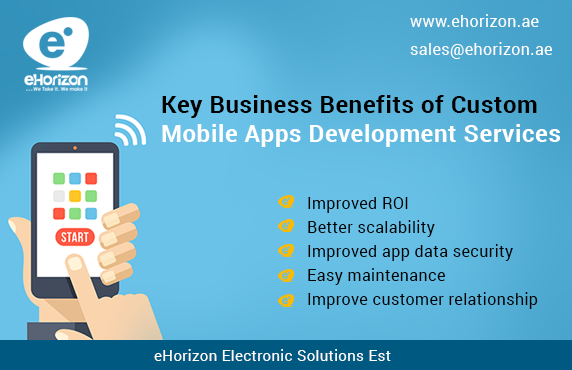

<?xml version="1.0" encoding="UTF-8"?><rss version="2.0"
	xmlns:content="http://purl.org/rss/1.0/modules/content/"
	xmlns:wfw="http://wellformedweb.org/CommentAPI/"
	xmlns:dc="http://purl.org/dc/elements/1.1/"
	xmlns:atom="http://www.w3.org/2005/Atom"
	xmlns:sy="http://purl.org/rss/1.0/modules/syndication/"
	xmlns:slash="http://purl.org/rss/1.0/modules/slash/"
	>

<channel>
	<title>mobile apps development in Dubai &#8211; Blog</title>
	<atom:link href="https://www.ehorizon.ae/blog/tag/mobile-apps-development-in-dubai/feed/" rel="self" type="application/rss+xml" />
	<link>https://www.ehorizon.ae/blog</link>
	<description></description>
	<lastBuildDate>Thu, 01 Mar 2018 05:29:32 +0000</lastBuildDate>
	<language>en-US</language>
	<sy:updatePeriod>hourly</sy:updatePeriod>
	<sy:updateFrequency>1</sy:updateFrequency>
	<generator>https://wordpress.org/?v=4.4.15</generator>
	<item>
		<title>Key Business Benefits of Custom Mobile Apps Development Services</title>
		<link>https://www.ehorizon.ae/blog/2016/12/28/key-business-benefits-of-custom-mobile-apps-development-services/</link>
		<comments>https://www.ehorizon.ae/blog/2016/12/28/key-business-benefits-of-custom-mobile-apps-development-services/#respond</comments>
		<pubDate>Wed, 28 Dec 2016 11:41:20 +0000</pubDate>
		<dc:creator><![CDATA[eHorizon]]></dc:creator>
				<category><![CDATA[website development]]></category>
		<category><![CDATA[mobile apps development in Dubai]]></category>

		<guid isPermaLink="false">https://www.ehorizon.ae/blog/?p=160</guid>
		<description><![CDATA[<p>For businesses, custom mobile application development can bring about a substantial growth with better prospects and opportunities. Various companies offering mobile apps development services in Dubai and elsewhere around the world can customize solutions to cater to the requirements and needs of diverse businesses. Because every business is unique with different goals and objectives, custom [&#8230;]</p>
<p>The post <a rel="nofollow" href="../../../2016/12/28/key-business-benefits-of-custom-mobile-apps-development-services/index.html">Key Business Benefits of Custom Mobile Apps Development Services</a> appeared first on <a rel="nofollow" href="../../../index.html">Blog</a>.</p>
]]></description>
				<content:encoded><![CDATA[<p style="text-align: justify;">For businesses, custom mobile application development can bring about a substantial growth with better prospects and opportunities. Various companies offering mobile apps development services in Dubai and elsewhere around the world can customize solutions to cater to the requirements and needs of diverse businesses. Because every business is unique with different goals and objectives, custom mobile apps development can greatly help in targeting the right market and expand the reach of products and services to a larger section of the audience.</p>
<p style="text-align: justify;">Custom mobile app development is gaining popularity not just in Dubai but all across the world. This is mainly due to the essential advantages that custom mobile apps can offer to small and large businesses and help them grow in the shortest time frame. Also, personalized mobile app development processes and solutions can cater to the needs of your target audience in a precise and effectual manner, thus giving your business the momentum that it requires to stay ahead in the competition.</p>
<p style="text-align: justify;">Irrespective of whether a business is small or large, custom mobile apps development can help with better growth and effective marketing in the long run. Customized business apps can do more than just improving the performance of your business and retaining your customers. Below are some of the most important benefits that custom mobile apps development can offer to your business irrespective of its nature and size.</p>
<p style="text-align: justify;"></p>
<ul style="text-align: justify;">
<li><strong>Improved ROI</strong></li>
</ul>
<p style="text-align: justify;">When mobile apps are custom-built, the true nature of your business is reflected in everything that you offer to your users and customers through the app. In other words, custom mobile apps negate the requirement of creating multiple apps by laying emphasis on just one dynamic mobile application that can offer everything to users. This leads to better business efficiency and an increase in returns on investment in the future.</p>
<ul style="text-align: justify;">
<li><strong>Better scalability</strong></li>
</ul>
<p style="text-align: justify;">One of the main differences between regular apps and custom mobile apps is the advantage in terms of scalability. Standard apps are built to handle limited resources and features. On the other hand, custom mobile apps can be scaled up as and when your business requires it. You can continuously make improvements, additions, and eliminations in a custom app, an activity which is a little difficult on regular mobile apps.</p>
<ul style="text-align: justify;">
<li><strong>Improved app data security</strong></li>
</ul>
<p style="text-align: justify;">You can add relevant security features to custom apps and reinforce necessary data security methods to protect important information and essential data of your business. Because everything is customized to your business, all data is secured with limited access and security measures are implemented according to your business needs.</p>
<ul style="text-align: justify;">
<li><strong>Easy maintenance</strong></li>
</ul>
<p style="text-align: justify;">Once the custom app has been built and developed by a developer, you can gain complete access and control to it, which allows you to make changes and any amendments that might be required in the near future. There is a minimal need to rely on others for anything once you get your custom mobile app ready and built by a proficient developer.</p>
<ul style="text-align: justify;">
<li><strong>Improve customer relationship</strong></li>
</ul>
<p style="text-align: justify;">You can send personalized messages to your customers through customized mobile apps. To retain customers and turn visitors into prospective customers and buyers, you can send out customized messages pertaining to your business’ products and services, thus establishing a better relationship with your customers for better business prospects.</p>
<p style="text-align: justify;">Custom mobile apps development can truly give your business a unique edge in the market and distinguish your brand from the rest. Mobile applications can truly bring about a positive change in the way your business functions and performs, along with producing outstanding results and profits for your company. Partner with a reputed <strong><a href="../../../../android-application-development-services.html" target="_blank">mobile apps development company in Dubai</a></strong> or elsewhere to make the most of custom mobile app services for your business.</p>
<p>The post <a rel="nofollow" href="../../../2016/12/28/key-business-benefits-of-custom-mobile-apps-development-services/index.html">Key Business Benefits of Custom Mobile Apps Development Services</a> appeared first on <a rel="nofollow" href="../../../index.html">Blog</a>.</p>
]]></content:encoded>
			<wfw:commentRss>https://www.ehorizon.ae/blog/2016/12/28/key-business-benefits-of-custom-mobile-apps-development-services/feed/</wfw:commentRss>
		<slash:comments>0</slash:comments>
		</item>
	</channel>
</rss>

<!-- Localized -->